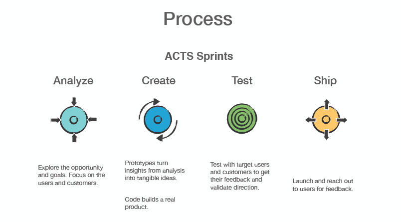
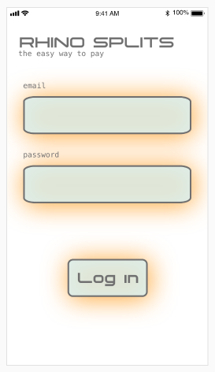

Project Overview
Rhino Splits is a peer-to-peer mobile payment app whose trajectory's peak will place it at the top of the market as the Apple of payment apps. The lifestyle of their user is similar to their company culture:
- Casual
- Traveling and dining out frequently
- Primary age range of 25-30 years
- Tech savvy
- Disposable income
The company was started by a seasoned user experience professional and a recent graduate of a full stack development program. They are aware that there are plenty of good-enough mobile banking apps out there, but are determined to create the one that is is easiest for users to integrate into their lives.
Analyze • Create • Test • Ship
Here is a visual of the process involved in creating the app.

My Role
I was responsible for the experience design, overall visual design, user research, and creative direction of the app. I researched competitors, interviewed users, tested the app, and determined the direction for the interaction design.
Challenge Statement
How might we...
...provide an easy, secure, and fun way for 25-35 year-olds to make peer-to-peer payments on the go?
A strong foundation was required for the project. This comes in the form of a "challenge statement" or "problem statement". It’s a “Goldilocks Situation”: If the challenge statement is too narrow, there is no room to explore solutions. Too broad of a statement doesn't provide a clear starting point. It has to be be just right. Brainstorming with other students who were working on the same project yielded this workable statement to guide us.
Research Yields Themes and Insights
The way to find out what users value is to do research. It's important to understand behaviors and frustrations, as a basis for testing hypotheses and finding patterns. Only then can the right solution arrive.
I interviewed two potential users and then met with other students working individually on the same project so we could share our results from our respective interviews. Replies from interviewees were written onto post-it notes and put on a white board. We looked for similar themes and grouped them together. This allowed us to distill our results into "themes" and "insights", which told us what users value. Here is what we gained:
Theme: Users want the app to be simple and easy
- Simplicity in design--It should look pretty and uncluttered
- It should be easy to find who they are paying
Theme: There is a set of most common situations where peer-to-peer payments occur
- Entertainment/socializing: splitting dinner bills, shows
- Splitting bills according to whether someone drank alcohol or not was mentioned by multiple users
- Domestic settings: rent, household help and child care
Theme: Users' preferences are based on experience with other payment apps or cash itself
- Venmo is most popular and the social media aspect is either seen as fun or superfluous and intrusive
- Zelle is used because it comes as a feature of their bank accounts
- Difficulty or tediousness in connecting Venmo to their bank account was remembered by some
- PayPal is not seen as a peer-to-peer app, but for paying businesses
- Venmo is seen as too friendly to pay businesses with
- Cash is viewed as easy by those who typically carry it
- Some users don't carry cash
Theme: Security is a concern but when probed, users did not prove to have looked into it
- An app is trusted based on the fact friends used it
- Zelle is trusted since it appears sanctioned by their bank-- accompanying their online account
Theme: Some features are highly valued
- Reminders to oneself and to others are important
- A calendar is useful
- The capability to connect to a smart watch is a concern
- Capability to do bank transfers
Users and Customers
I merged the users that I'd interviewd into one fictituous "user persona". Behaviors, patterns, attitudes, goals, skills, and environment, along with a few personal details are included.
Lessons Learned
Users have cognitive dissonance.
They want their banking information to be secure YET...
...they don't do any research about security but will use an app if their friends use it. This appears to be their measuring stick.
...they resent having to go through too much of a process to sync the app with their bank account.
Primary User and Customer Persona
Journey Mapping
When Kelly goes to see live music or go dancing with friends, she wants to be able to compensate them immediately if she is borrowing cash from them to get into the event.
Rough Draft Sketch of a Wireframe
Second Draft of the Wireframe ••• A Lo-Fidelity Prototype
A user was recruited to sit down and go through the motions of Kelly's journey once I completed the wireframe using Adobe XD. Some obvious elements were missing, such as a back-button as a fixture on every page. The user didn't notice how to cancel a processing payment, as the word "Cancel" was originally small and at the top next to the back button--so a large cancel button was added. But overall, the testing went smoothly as long as there was no deviation from Kelly's prescribed journey. With more complexity I anticipate more opportunities for the tester to be confused, which means more things I will have the opportunity to improve. Fortunately, I think it's fun! Greater functionality, colors, and a more distinctive style (and logo) will also be added before further testing. I will post the next phase after more progress is made.
Click on the image to interact with the prototype.
